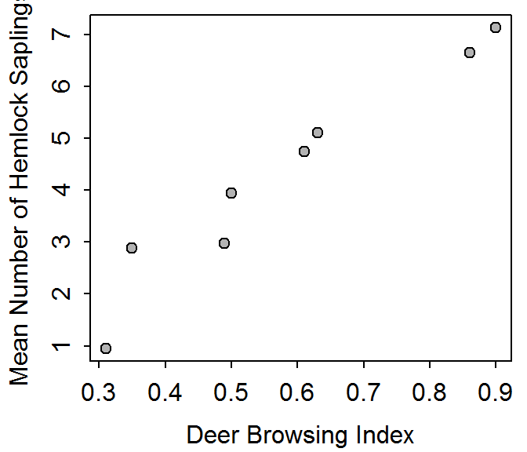
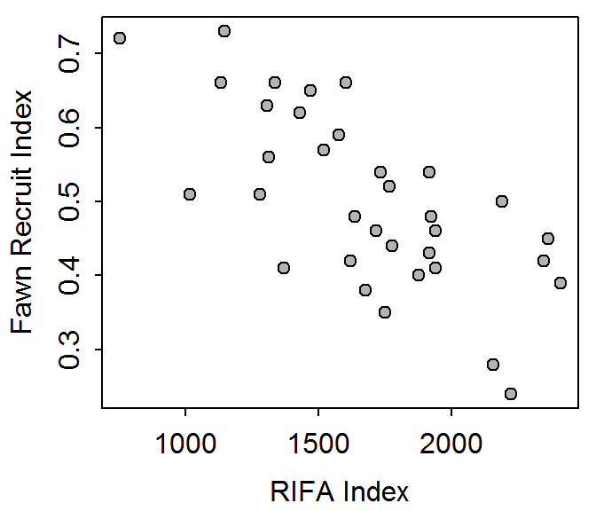
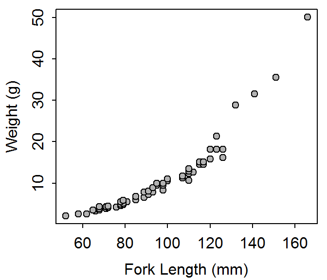
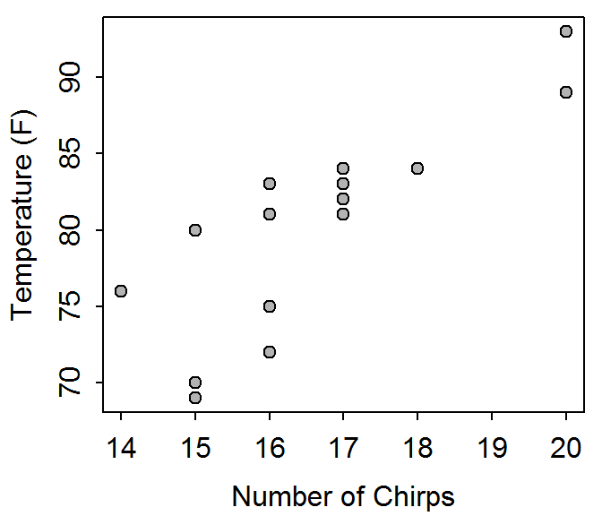
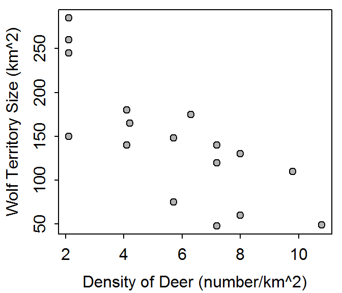

The scatterplot between mean number of hemlock samplings and the deer browsing index is shown in Figure 1. The correlation coefficients is 0.97.

Figure 1: Scatterplot of wolf territory size versus deer density.
df <- read.csv("data/Hemlock.csv")
plot(saplings~browse,data=df,pch=21,bg="gray70",
ylab="Mean Number of Hemlock Saplings",xlab="Deer Browsing Index")
corr(saplings~browse,data=df)
The bivariate relationship between cadmium and copper in the topsoil at this site is linear, with a strong outlier at (18.1,76) and two weaker possible outliers at (2.6,81) and (8.2,47), with a positive association, and fairly strong. Strength was visually assessed from the scatterplot rather than using the correlation coefficient because of the presence of outliers.
The bivariate relationship between highway and city gas mileage for Chevy Luminas is linear, with no obvious outliers, with a positive association, and strong (r=0.875). Strength was assessed with the correlation coefficient because the form is linear and there are no obvious outliers.
The relationship between the fawn recruitment and the index of red-imported fire ants (Figure 2) is linear, with no obvious outliers, with a negative association, and moderately strong (r=-0.70). Strength was assessed with the correlation coefficient because the relationship is linear with no obvious outliers.

Figure 2: Scatterplot of RIFA index versus fawn recruit index.
r <- read.csv("data/RIFA.csv")
plot(fawnrec~rifa,data=r,pch=21,bg="gray70",
ylab="Fawn Recruit Index",xlab="RIFA Index")
corr(fawnrec~rifa,data=r)The relationship between the weight and total length of Grafton Lake Yellow Perch (Figure 3) is nonlinear, with no obvious outliers, a positive association, and strong. Strength was assessed visually from the scatterplot rather than with the correlation coefficient because the relationship is nonlinear.

Figure 3: Scatterplot of Grafton Lake Yellow Perch weight versus total length.
p <- read.csv("data/PerchGL.csv")
p00 <- filterD(p,year==2000)
plot(w~fl,data=p00,pch=21,bg="gray70",
ylab="Weight (g)",xlab="Fork Length (mm)")The relationship between temperature and number of chirps by a cricket (Figure 4) is linear, with no obvious outliers, a positive association, and strong (r=0.83). It is also worth noting that the relationship appears to get weaker as the number of chirps decreases. Strength was assessed with the correlation coefficient because the relationship is linear with no obvious outliers.

Figure 4: Scatterplot of temperature versus number of chirps by a cricket.
ch <- read.csv("data/Chirps.csv")
plot(temp~chirps,data=ch,pch=21,bg="gray70",
ylab="Temperature (F)",xlab="Number of Chirps")
corr(temp~chirps,data=ch)The relationship between the Wolf territory size and density of Whitetail Deer (Figure 5) is linear (though I could see where someone would say that it is very slightly curved), with no obvious outliers, a negative association, and moderately strong (r=-0.79). Strength was assessed with the correlation coefficient because the relationship is linear with no obvious outliers.

Figure 5: Scatterplot of wolf territory size versus deer density.
ml <- read.csv("data/Wolves2.csv")
plot(terr~deer,data=ml,pch=21,bg="gray70",
ylab="Wolf Territory Size (km^2)",xlab="Density of Deer (number/km^2)")
corr(terr~deer,data=ml)